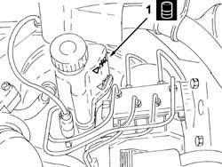

3330A10 BRAKE FLUID - Check level and top up, if necessary.
- Path
- Procedures > 33 BRAKING SYSTEM > 3330 HYDRAULIC BRAKING SYSTEM > 3330A hydraulic brake system tests and checks > 3330A10 BRAKE FLUID - Check level and top up, if necessary.
- Kind
- repair procedure (removal / refitting; the operation number is the code)
- Applies to
- all engines; all production periods
- Interactive page
- https://sloeber94.github.io/elrnDB-a147/en/#/3025216
Applies to: all engines; all production periods
.
1. Check that the fluid in the reservoir is on maximum level; if not, top up with the recommended fluid.
 | Type | Component | Name | Qty. |
|---|---|---|---|---|
1 | Fluid | BRAKE-CLUTCH HYDRAULIC SYSTEMS | TUTELA CAR TOP 4 FOR ALFA ROMEO | - |

Topics that link to this page (11)
- F10 EXCESSIVE BRAKE PEDAL FREE PLAY
- 0010K20 20,000km service coupon, emission control version
- 0010K40 40,000km service coupon, emission control versions
- 0010K60 60,000km service coupon - emission control versions
- 0010K80 80,000km service coupon - emission control versions
- 0010M01 100,000km service coupon, emission control versions
- 0010M20 120,000km service coupon, emission control versions
- 0010M40 140,000km service coupon - emission control versions
- 0010M60 160,000km service coupon - emission control versions
- 0010M80 180,000km service coupon - emission control versions
- 0010T64 brake and or clutch fluid check level and top up as necessary